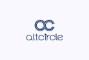

「Sansanだから通じるメソッドだ」は、本当か？
「2つのサクセス」という考え方
ライトサクセスとディープサクセスSansanにおける２種類のサクセス
Sansanにおける２種類のサクセス
ライトサクセスとディープサクセスの発生パターン「Sansanだから通じるメソッドだ」は、本当か？
「ライトサクセス／ディープサクセス」の考え方は独自に考案したもので、国内外のSaaSやカスタマーサクセス界隈において一般的というわけではありません。
私は長らくSansanのカスタマーサクセス部門で戦略立案に携わる傍ら、カスタマーサクセスの情報発信にも力を入れてきました。発信する情報はSansanで養われ、鍛えられたCSメソッドの数々です。すると、こんなご意見をいただくことがありました。
最初は自社への不満を漏らしているだけかとも思いましたが、主張をされている方々のプロダクトをつぶさに見てみると、提供している価値とそのサクセスの対象がさまざまであることに気づきました。つまり、サクセスしにくいプロダクトとしての共通性があるのではなく、他の観点によってメソッドが通じるか否かが判断されるようです。
多くのSaaS関係者はこのことを体感していますが、明確に意識している人は少ないかもしれません。社内のビジネスサイドの方から「うちのプロダクトはROIを問われたときに弱い」といった会話が出てくるのであれば、この2つの概念を正しく理解していない可能性があります。
「2つのサクセス」という考え方
この記事では、SaaS業界の大きなテーマの一つであるこの問いについて、カスタマーサクセスの視点から考えていきます。
ライトサクセスとディープサクセス
ライトサクセスの定義は（顧客の）現場にサクセスをもたらしている状態です。そして、ディープサクセスとは（顧客の）経営にサクセスをもたらしている状態です。
多くのSaaS関係者はこのことを体感していますが、明確に意識している人は少ないかもしれません。社内のビジネスサイドの方から「うちのプロダクトはROIを問われたときに弱い」といった会話が出てくるのであれば、この2つの概念を正しく理解していない可能性があります。
多くのSaaS関係者はこのことを体感していますが、明確に意識している人は少ないかもしれません。社内のビジネスサイドの方から「うちのプロダクトはROIを問われたときに弱い」といった会話が出てくるのであれば、この2つの概念を正しく理解していない可能性があります。
キャプション付きの場合下に表示されます。最大文字数で５６文字程度で２行に収まります。レスポンシブで最大８０文字です
Sansanにおける２種類のサクセス
典型的なSaaSプロダクトにおいては、ライトサクセスとディープサクセスが段階的に発生します。まずはライトサクセスで現場に業務改善効果を体感してもらい、それを増幅させて経営的な利益というディープサクセスへ繋げていくのです。言うは易しですが、実際には3年程度の時間をかけてジワジワと実現されます。
最大文字数で５６文字程度で２行に収まります。レスポンシブで最大８０文字です
ライトサクセスとディープサクセスは「段階的に」発生する
標準本文フォントサイズ16px。Newsと同じフォント設定です。ｐブロックをわけるとマージンボトムに30pxはいります。太文字の設定はBoldの設定にしています。文字の大きさ、量、字間、行間などを確認するために入れています。これはダミーです。文字の大きさ、量、字間、行間などを確認するために入れています。文字の大きさ、量、字間、行間などを確認するために入れています。これはダミーです。文字の大きさ、量、字間、行間などを確認するために入れています。 標準本文フォントサイズ16px。Newsと同じフォント設定です。ｐブロックをわけるとマージンボトムに30pxはいります。太文字の設定はBoldの設定にしています。
Thあり 100%
| ThがあるVer 左寄せ | ThがあるVer 左寄せ | ThがあるVer 左寄せ | |
|---|---|---|---|
| 見出し１ | コンテンツ３の内容が入ります。 | コンテンツ３の内容が入ります。 | コンテンツ３の内容が入ります。 |
| 見出し2 | コンテンツ３ | コンテンツ３ | コンテンツ３ |
4列 20%20%20%40%
| width20%設定 | width20%設定 | width20%設定 | width40%設定 |
|---|---|---|---|
| 基本は左揃え | マルチエクスペリエンスを向上するアバイアのコンタクトセンターソリューション | マルチエクスペリエンスを向上するアバイアのコンタクトセンターソリューション | マルチエクスペリエンスを向上するアバイアのコンタクトセンターソリューション |
横スクロールあり
| width40%に設定することで見た目を整えることができます。左右パディング25pxあくように改行していきます。 | width20%に設定。上下中央クラス設定 | width40%に設定することで見た目を整えることができます。左右パディング25pxあくように改行していきます。 | width40%に設定することで見た目を整えることができます。左右パディング25pxあくように改行していきます。 |
プロダクトの特徴と2つのサクセスの関係
「ライトサクセス／ディープサクセス」の考え方は独自に考案したもので、国内外のSaaSやカスタマーサクセス界隈において一般的というわけではありません。
私は長らくSansanのカスタマーサクセス部門で戦略立案に携わる傍ら、カスタマーサクセスの情報発信にも力を入れてきました。発信する情報はSansanで養われ、鍛えられたCSメソッドの数々です。すると、こんなご意見をいただくことがありました。
ライトサクセスとディープサクセスの発生パターン
ライトサクセス（現場が喜ぶ）
名刺を持ち歩かなくてよくなる
名刺フォルダーでデスク周りがかさばらない
名刺をもらった相手の連絡先をクラウド上で管理し、スマホから閲覧できる
また、SaaSというものは元来、特定業務の問題を解決するためにサービス化されているので、顧客が真に望むビジネスサクセスを一つのSaaSだけで達成するのは、そもそも無理があるのです。
先ほども書いたとおり、一つのSaaSで提供できるサクセスには限界があり、それがディープサクセス状態とまで言えないことは往々にしてあります。このような場合、プロダクトが解決すべき問題領域を広げることによってディープサクセスの「深さ」と「広さ」を向上させる手があります。
ディープサクセス（経営が喜ぶ）
1. これはダミーです。文字の大きさ、量、字間、行間などを確認するために入れています。
2. liとliの間は18px。フォントサイズ16pxが標準設定です。
また、SaaSというものは元来、特定業務の問題を解決するためにサービス化されているので、顧客が真に望むビジネスサクセスを一つのSaaSだけで達成するのは、そもそも無理があるのです。
先ほども書いたとおり、一つのSaaSで提供できるサクセスには限界があり、それがディープサクセス状態とまで言えないことは往々にしてあります。このような場合、プロダクトが解決すべき問題領域を広げることによってディープサクセスの「深さ」と「広さ」を向上させる手があります。
文章強調のブロック。このフォントは標準フォントサイズ16pxです。他にも用意したフォントサイズで使用できますが。背景色のグレーのマージンは40pxで変わりません。
キャプション付きの場合下に表示されます。最大２行を超えない方が美しいかと思います。最大文字数で３９文字程度で２行に収まります。レスポンシブで最大８０文字です
標準本文フォントサイズ16px。Newsと同じフォント設定です。ｐブロックをわけるとマージンボトムに30pxはいります。文字の大きさ、量、字間、行間などを確認するために入れています。

SaaS企業の「最初の100人」をどう選ぶ？SaaS企業の「最初の100人」をどう選ぶ？SaaS企業の「最初…
SaaS企業の「最初の100人」をどう選ぶ？
お問い合わせ